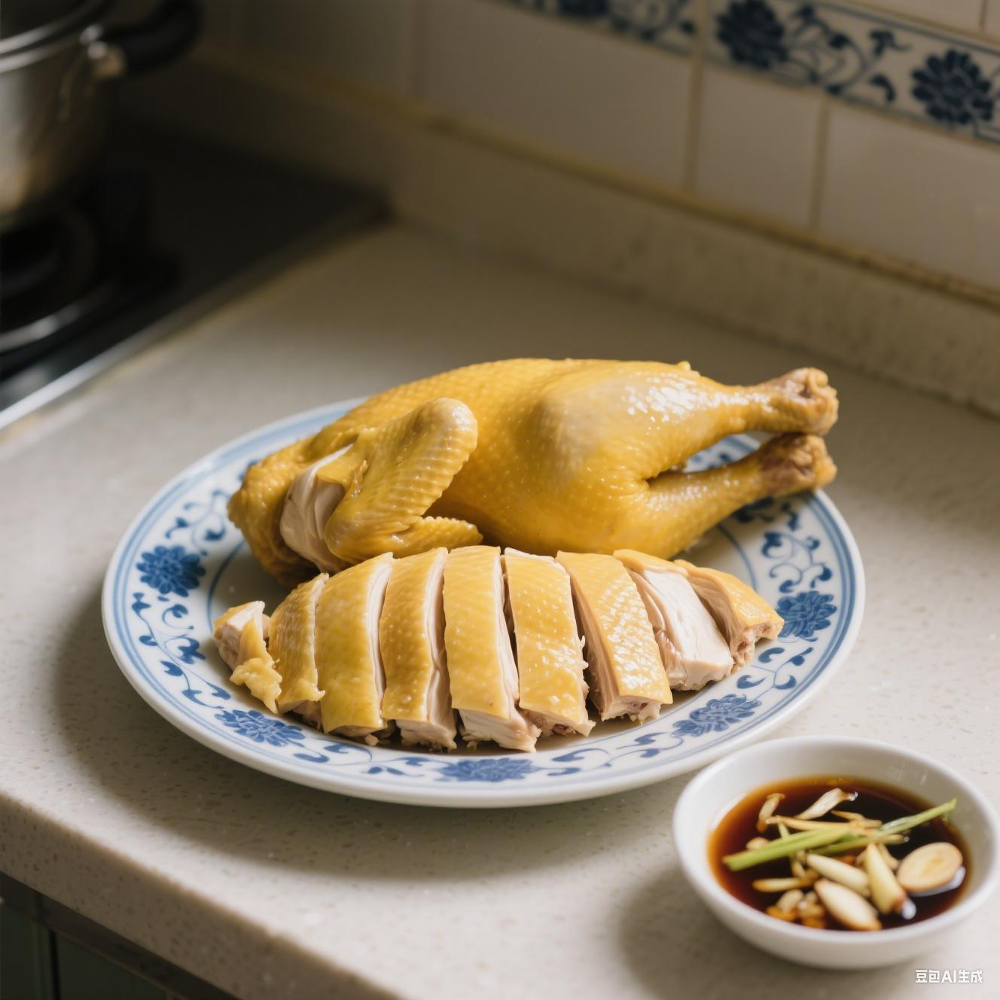

白切鸡
白斩鸡，又称白切鸡，在南方菜系中普遍存在，如上海菜、江苏菜、浙江菜、安徽菜、粤菜系广府菜、江西菜、川菜、客家菜、海南菜，堪称餐桌上的常客。因鸡在烹煮时不加调味，肉色洁白，皮带黄油，保持了鸡肉原汁原味的鲜美，故称为白斩鸡。
这道菜历史悠久，白斩鸡的做法出自北馔，是伴随唐代“索唤（快餐）”而诞生的“旋鮓”肴馔，它是宋代士庶南迁，给南烹带来食文化交流和融合的产物。清代袁枚在记载乾隆年间江浙地区饮食状况的《随园食单》中便有记载，当时称其为 “白片鸡”，并赞其 “此是太羹元酒之味” ，足见其风味独特，能最大程度保留鸡肉本味。
制作白切鸡，讲究食材的新鲜，通常选用三黄鸡等优质品种。制作时，先将鸡宰杀处理干净，放入加了葱姜、料酒的清水中，以小火慢煮至刚刚熟透，期间需适时翻面，确保受热均匀。煮好后，迅速将鸡捞出放入冰水中浸泡，这一步骤是关键，能使鸡皮紧致，口感更爽滑，鸡肉也更鲜嫩多汁。最后，将鸡斩成小块装盘，搭配由姜葱蓉、盐、花生油等调制而成的蘸料。姜葱蓉的清香辛辣与鸡肉的鲜美相得益彰，蘸上蘸料，入口鲜嫩爽滑，鸡肉的原汁原味在舌尖散开，令人回味无穷。
历史起源
唐盛时期，由于宫廷官员为加快工作节奏，“索唤”快餐业应运而生，催生出“旋鲊”美食的雏形。“旋”即马上、即刻的意思，“鲊”即为食物提鲜、调味用的拌和佐料。“旋鲊”类似我们当下用各种调味品，放在各种切好的荤、素熟食中，拌匀上桌的凉菜制作。
唐代李白诗云：“亭上十分绿醑酒，盘中一味黄金鸡。”李白亭上豪饮，而菜肴仅一道黄金鸡，黄金鸡就是白斩鸡，也十分符合当下现代南方饮酒之人的偏好。何为黄金鸡肴馔？南宋林洪在《山家清供》记载，这道从唐代传承而来的黄金鸡肴馔：“其法燖鸡净，用麻油、盐水煮之，入葱、椒，候熟擘饤，以元汁别供。”其中“燖鸡净”为汆水后，去血水和清洗掉鸡背骨内的血块，然后用麻油、盐水煮熟，斩切装盘，撒上葱、椒跟元汁蘸料。这里除了用麻油和盐水煮熟，基本烹饪和食用方法与现代接近。
唐代，黄金鸡作为旋鮓，夏日里保鲜，唯一的方法就是利用井水“冰镇”。史籍记载像宫廷官员享用的清风饭，其清凉的效果，都是通过井水的低温获得的。把黄金鸡冷激，得到皮脆肉嫩的效果。按照古人对食材的命名习惯，黄金鸡即是三黄鸡（脚黄、皮黄、嘴黄），其鸡种在我国唐代已经有了，“三黄鸡”的名字是由朱元璋钦赐。
清人袁枚《随园食单》称白斩鸡为白片鸡，说它有“太羹元酒之味”。因为白与百，鸡和吉都是谐音字，所以“白斩鸡”有着“百财大吉”的好口彩。袁枚在《羽族单》中罗列了数十种鸡菜，列在首位的是白片鸡：“肥鸡白片，自是太羹、玄酒之味”。他认为：白片鸡“尤宜于下乡村、入旅店，烹饪不及之时，最为省便”。将肉质较嫩的鸡煮熟，再放进冰水中来回泡，使整只鸡皮脆肉嫩，再佐以调味蘸料，便有了太羹、玄酒之味。因鸡在烹煮时不加调味，肉色洁白，皮带黄油，保持了鸡肉原汁原味的鲜美，故称为白斩鸡。
各地特色
白斩鸡是正牌嫡出的上海菜，上海人过年必定要吃白斩鸡，白斩鸡的烹饪方法是最最简单不过的了，不过也考火候。两斤半上下光鸡一只，冷水淹过四分之三鸡身，加葱姜、料酒，大火煮沸，转小火十分钟，中间可翻一面鸡身，熄火后焖十分钟。这两个十分钟，即是要诀。这样焖出来的鸡肉极嫩，鸡腿骨中骨髓仍然鲜红，甚至带有少许血水，就像三分熟的上等牛排，是白斩鸡的最佳状态。
焖过十分钟后的鸡仍然很烫，小心捞出，在大量凉水中冲透，使鸡皮紧致，口感韧中带脆。须谨记所有肉类家禽都不能在它还是热的时候就切，会散碎无法成型。必须俟它彻底冷透，表面略干，才可动刀斩件。白斩鸡蘸清酱油才是至味。
白切鸡是粤菜鸡肴里最简单但也是最复杂的一种，是粤菜鸡肴中最普通的一种，属浸鸡类。也有认为起源于广东。以粤菜的白切鸡最知名，它非常考验食材的品质和厨师的技艺。浸鸡是做白切鸡最重要的一步，鸡在滚出虾眼小泡的高汤中三提三放，之后再“过冷河”。晶莹爽脆的鸡皮粘连着嫩滑的鸡肉，骨髓处透着一丝血色，挨着骨头的肉呈淡红色，鸡汁在鸡皮下凝聚成啫喱冻，这样便是正宗的白切鸡。蘸料最好最受欢迎的莫过于姜葱蓉。如今，粤菜厨坛中，鸡的菜式有200余款之多，而最为人常食不厌的却属白斩鸡，原汁原味，皮爽肉滑，大筵小席皆宜，逢年过节必备，深受食家及普通百姓喜欢。
食用疗效
鸡肉性甘、微温，入肾、脾、胃经。具有温中益气、补肾填精、养血添髓等功效，对肾精不足、脾虚水肿、脾胃虚弱、疲乏无力、腰膝酸软、月经不调、贫血等有食疗作用。